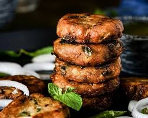

🥙 Shikampuri Kebabs

Ingredients
- 500g minced mutton or chicken
- 1/2 cup soaked chana dal (split Bengal gram)
- 1 tbsp ginger-garlic paste
- 2-3 green chilies
- 1/2 tsp turmeric powder
- 1 tsp garam masala
- Salt to taste
- 1 small onion (finely chopped)
- 1/4 cup chopped mint and coriander leaves
- 2 tbsp hung curd or thick yogurt
- Oil for shallow frying
Instructions
- Cook minced meat with soaked dal, spices, and green chilies until soft and water evaporates.
- Cool and grind into a smooth paste.
- Mix in onion, herbs, and yogurt to form the kebab mixture.
- Shape into flat patties and refrigerate for 15–20 minutes.
- Shallow fry on a non-stick pan until golden brown on both sides.
- Serve hot with mint chutney and onion rings.
Serve With
- Paratha or naan
- Green chutney and onion salad
- Lemon wedges
💡 Tip: Refrigerating the mixture helps in shaping the kebabs easily.